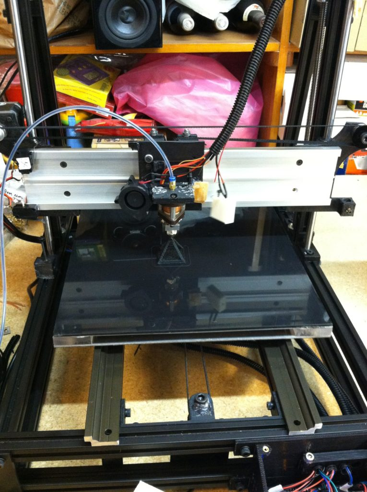
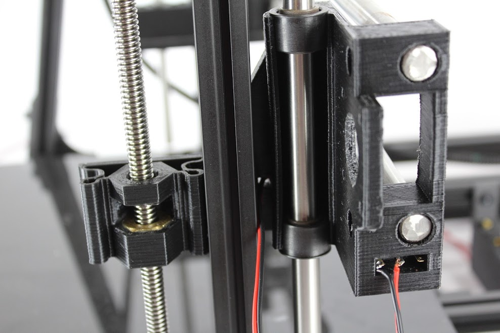
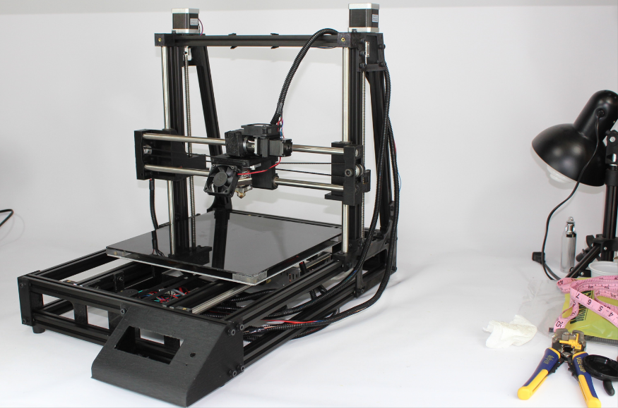
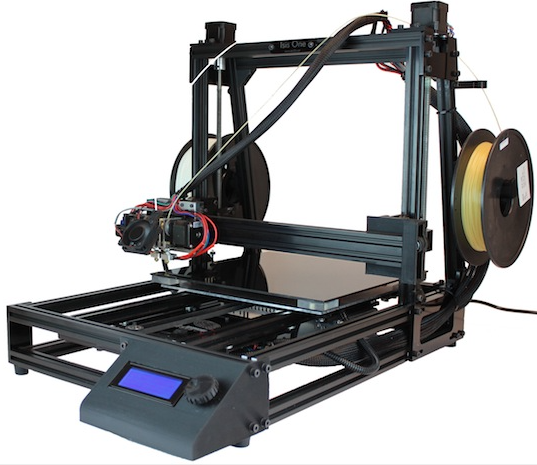

Linear Systems Feb 25, 2018
One of the most obvious determiners of print quality in an FDM system is the quality of the linear systems on which the axes move. A good linear system is repeatable enough to achieve excellent layer stacking and rigid enough to allow adequate speed. It is inexpensive, low friction, quiet, and allows carriage mass to be minimized. We spent more time on the choice of a linear system than on almost any other aspect of our design, trying about a dozen options before returning to a rod system very similar to the one we started with, but with one key difference. Shortly after we finished this new rod system, a new product appeared on the market that was head and shoulders better than anything we had tried. Committed to a redesign for the sake of our new printhead, we decided to use it.
We learned a lot in the process, did a lot of rigorous, empirical comparison, and wore out our welcome with the Igus sales rep who kindly send us free samples after free samples as we kept finding fault with each product. Doing it again, we could have done a lot less work.
If you take apart most any consumer product that involves linear motion—an inkjet printer, for example, or even an optical drive—you’ll see very simple linear systems based on rods, on which smooth bushings slide. Rods offer a very simple and economical option, becoming problematic only when distances become long or loads become heavy. Early consumer FDM printers almost all used rods, though none had particularly well implemented systems. Bearings were seldom good and alignment of the rods was difficult, leading to binding of the axes.
We approached the problem by ordering a whole bunch of different options, designing them into test rigs, and running a lot of prints. We were surprised to see that we were getting quite poor results from the linear rails, even the expensive ones. All seemed to have too much slop to achieve good layer stacking. Our methods of measuring became more sophisticated and quantitative as we continued, but however we measured, the evidence kept stacking up against linear rails.
Becoming disillusioned with rails, we turned our attention back to rods, determined to address the binding problem once and for all. Though binding plagued all our implementations, we managed to source an inexpensive pairing of rods and bearings that by themselves did not exhibit slop. There seemed to be little—perhaps even inverse—correlation between cost and performance. Sophisticated offerings from linear motion companies didn’t perform so well in our trials, but simple precision ground stainless rod from McMaster Carr, along with tight fitting, teflon-filled Delrin bushings worked nicely.
We floated the Z leadscrew nut with this spring arrangement, giving it play in X and Y but not Z, and thus eliminated binding problems. We employed a similar strategy with the linear bearings themselves. The problem was that a rod based system required two rods, and there was no way to keep them aligned well enough to guarantee smooth movement. We finally figured out that by floating one of the bearings—giving it a few hundreds of microns of play over the length of the axis—we could achieve truly smooth motion. More surprisingly, this local lack of rigidity did not seem to hurt our print quality a bit. It would have been a wholly unsuitable arrangement for a machine like a mill, which dealt with cutting forces, but FDM printheads experience very little resistance. We implemented the system, and washed our hands of the problem.
As fate would have it, our rod design didn’t last long. A new product called V-slot appeared on the market, which offered what was in retrospect a delightfully obvious solution to the linear motion problem. It consisted of an aluminum extrusion almost identical to the 80/20 extrusions that we made our frame of, except that the slots had beveled edges. Delrin V-wheels rode these tracks, tensioned with eccentric spacers. The extrusions themselves were no more expensive than the stock 80/20 we were already using, and the wheels were almost trivially cheap. Further, they could be installed in inexpensive aluminum plates that made up the carriages we were already using on the Y axis. We ordered samples, implemented a test rig, and were blown away by the quality.
We learned a lot from the linear system project. It taught us that crowds are frequently wrong, that price and quality often show stunningly little correlation, and that often there exists low hanging fruit that few seem to notice. It taught us that one’s own empirical data is essential to getting to the bottom of what works best. It also taught us that sometimes a massive research project is made entirely irrelevant by new developments. Under such circumstances the best thing to do is to swallow your pride, eat your sunken costs, implement the new solution, and move on.
